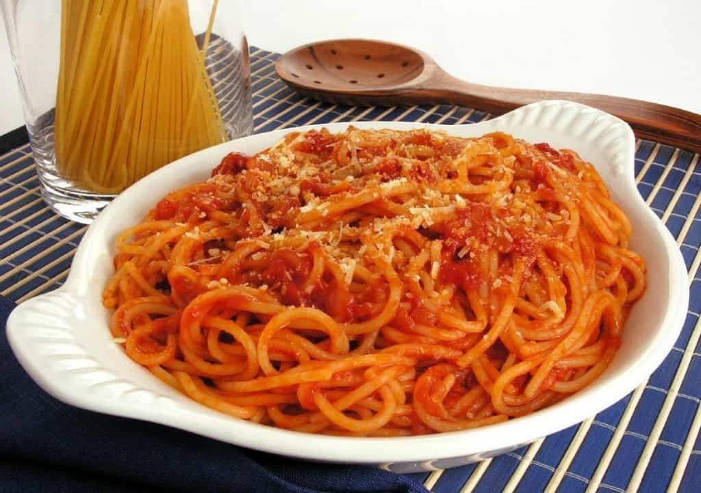

Macarronada - Pasta

Ingredients
- 300 g of pasta
- 1/2 tomate sauce can
- 1 sliced in small pieces onion
- 2 sliced sausages
- 1 tablespoon of butter
- salt and pepper
- parmesan cheese
Preparations
- Boil the water. When it boils, add some salt to cook the pasta
- Cook the pasta as it is indicated in the packaging and reserve it
- Use the cooking pot to cook the onion with the butter. As it turns gold, put in the sausages
- Add the tomato sauce. Adjust salt and pepper
- When the sauce is well cooked and seasoned, add the pasta. It's ready to serve. Parmesan cheese cn be put on the plate as you wish